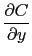
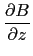
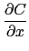
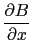
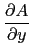
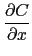
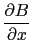
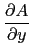

suivant: Le potentiel : potential
monter: Les expressions de plusieurs
précédent: La divergence : divergence
Table des matières
Index
Le rotationnel : curl
curl a deux paramètres : une expression F dependant de
3 variables rèelles et un vecteur de dimension
3 indiquant le nom de ces variables.
curl désigne le rotationnel de F.
Attention, ici n = 3.
On a :
curl([A,B,C],[x,y,z])=
[ - ,  - ,  - ].
- ,  - ].
On tape :
curl([x*z,-y^2,2*x^y],[x,y,z])
On obtient :
[2*x^y*log(x),x-2*y*x^(y-1),0]
Documentation de giac écrite par Renée De Graeve